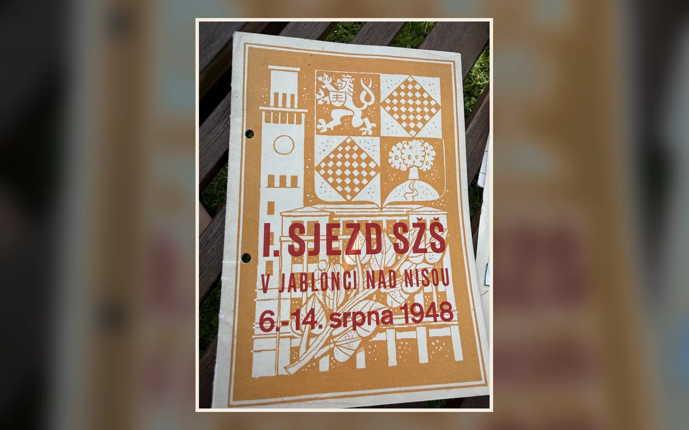
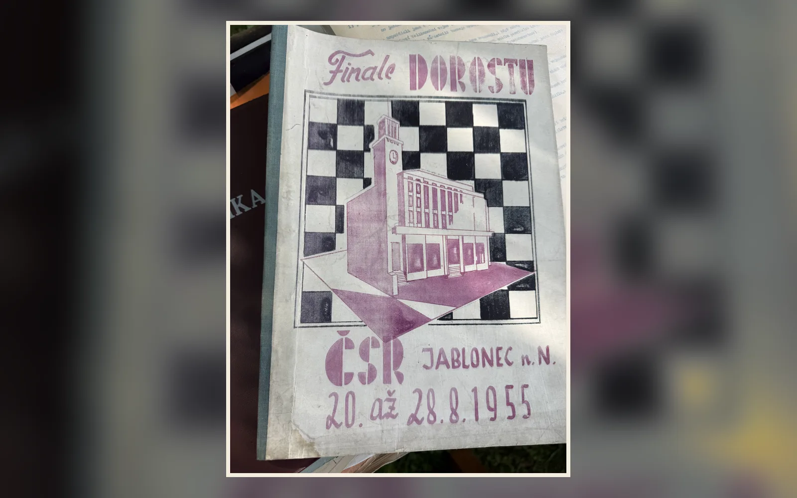
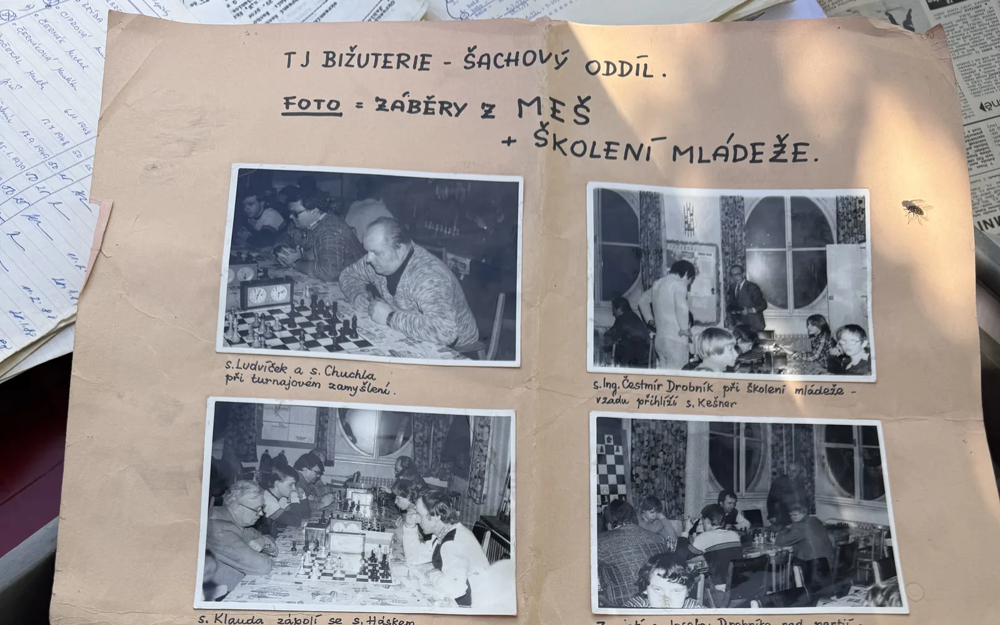
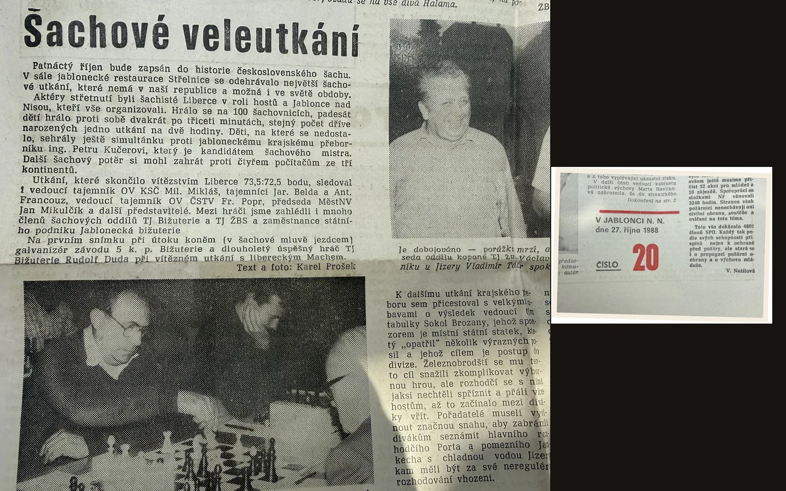

První velká šachová stopa
Jablonec hostí I. sjezd SŽS. Dochovaná obálka připomíná, že zdejší šachová tradice sahá hluboko před vznik oddílu Bižuterie.
Přes sedmdesát pět let jabloneckého šachu. Oddíl Bižuterie od 70. let, silná mládež a otevřené turnaje pro všechny generace.
Klubová kronika
Šachy mají v Jablonci kořeny nejméně od roku 1948. Oddíl TJ Bižuterie na ně navazuje od 70. let — a každý další tah přidává novou kapitolu.

Jablonec hostí I. sjezd SŽS. Dochovaná obálka připomíná, že zdejší šachová tradice sahá hluboko před vznik oddílu Bižuterie.

Od 20. do 28. srpna se v Jablonci hraje celostátní finále dorostu. Město už tehdy patří k výrazným šachovým místům regionu.
Dochované klubové materiály potvrzují činnost šachového oddílu Bižuterie nejpozději od 70. let.

Začíná dlouhá éra vedení spojená s klubovým životem, turnaji a systematickou prací s mládeží.

Jablonečtí organizují mimořádné utkání s Libercem na 100 šachovnicích. Padesát dvojic hrálo dvakrát po třiceti minutách.
Samostatná TJ Bižuterie získává podobu občanského sdružení a navazuje na dlouhou oddílovou tradici.
Oddíl opouští legendární věž Sokolovny a stěhuje své zázemí do nových prostor.
Předsedou oddílu se stává Antonín Duda. Ve stejné sezoně mládež postupuje do 1. ligy.
Směr, ke kterému chceme klub společně dovést.
Z klubové kroniky a dobového tisku
Městská hala
U Přehrady 4747/20
466 02 Jablonec nad Nisou
zasedací místnost v 1. patře
(dveře autoškola Bajgar)
Čtvrtek: 16:00 - 17:30 (Mládež)
Čtvrtek: 17:30 - 20:00 (Dospělí a pokročilí)